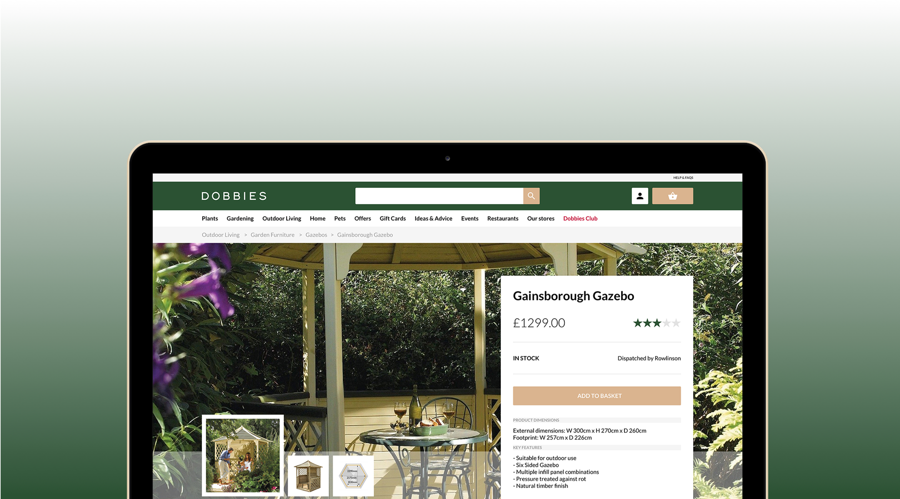
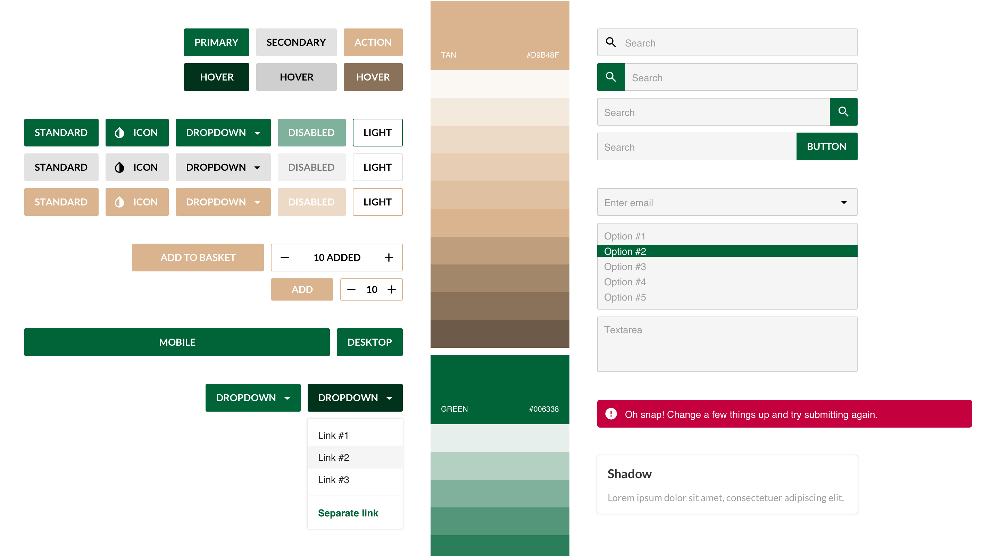
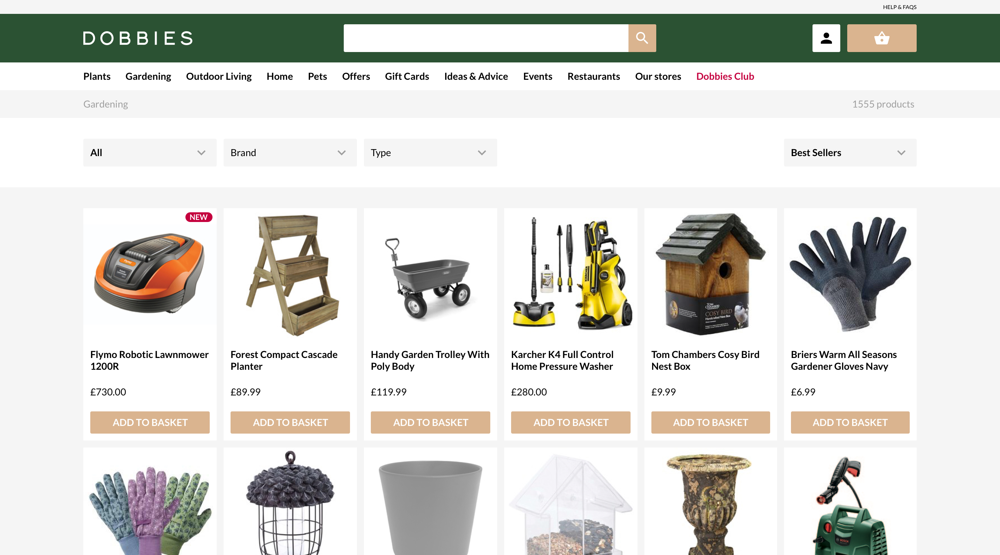
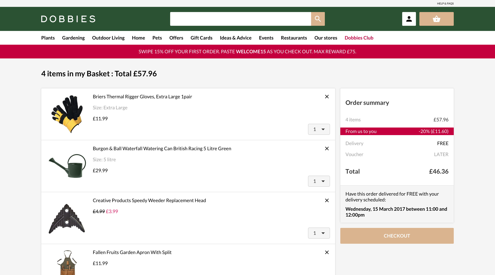

Ocado GM Platform
Lead UX Designer
While Ocado has been growing its online grocery business at 15% over the past year (with a 65% year-on-year increase in profit before tax), its general merchandise operation has become the fastest growing part of Ocado.com. It currently represents 7 – 8% of the total business.
This webshop offer a personalised customer experience in line with the client business strategy and fully tailored to reflect every kind of brand. At the moment, this platform includes five different websites (Dobbies, Fabled by Marie Claire, Fetch and Sizzle) and is capable to cover a new client every year.


My role
I managed the UX team of Ocado General Merchandise that includes five different responsive websites, all driven by the same platform.
I built, grew and curated an in-house agile UX and UI design team.
I designed and implemented the rules of the design and managements systems.
We executed journeys, wireframes, prototypes and design specs.
Responsible for all aspects of UX and the UI design of the multi-brand e-commerce platform (Web and React Native apps).
Build and lead a multi-disciplinary UX team (Designers, Developers and Analysts).
Establish a working relationship between teams in different countries.
Work with developers, analysts, marketing, stakeholders and product owners to deliver user-centered and business strategy.
